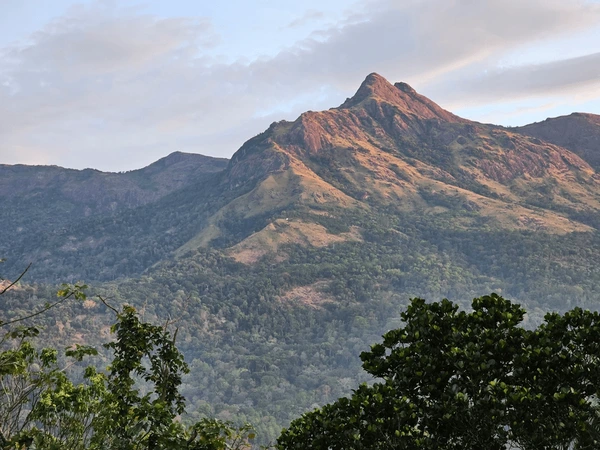
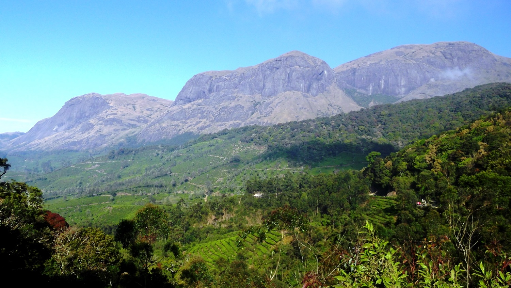
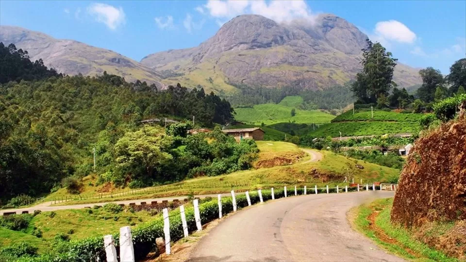
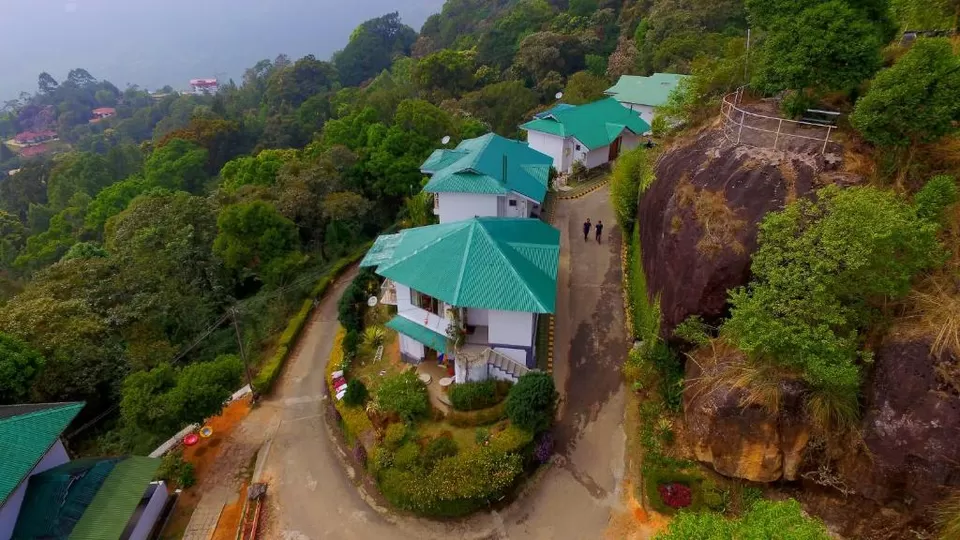

Anamudi Peak, the highest peak in South India, is located in the Western Ghats within Eravikulam National Park near Munnar. Standing tall at 2,695 meters, it offers breathtaking views, rich biodiversity, and a paradise for nature lovers.




"Standing at the highest peak in South India was an unforgettable experience."
- Vishal R."The views are surreal and the environment is peaceful and refreshing."
- Sneha P."Perfect destination for nature lovers and photography enthusiasts."
- Manoj K.